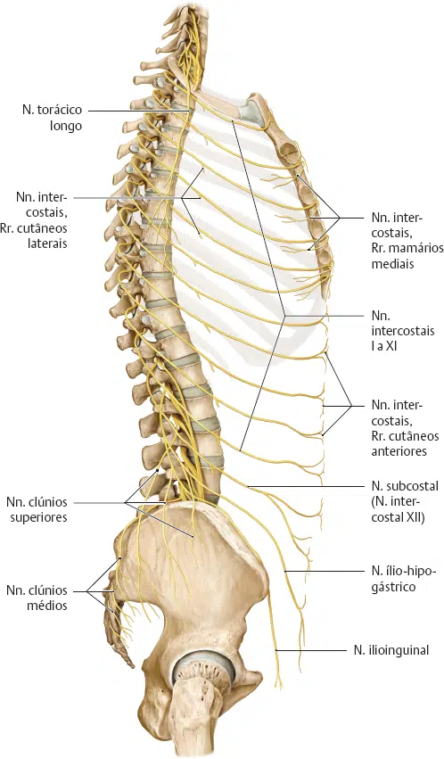
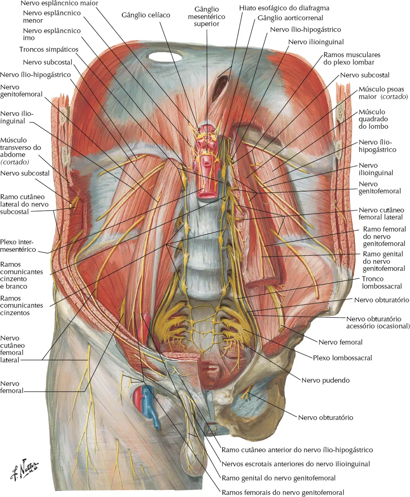

A inervação da parede anterolateral do abdome é primariamente somática, o que significa que ela fornece suprimento motor para os músculos e sensibilidade para a pele e o peritônio parietal adjacente.
Essa região é suprida principalmente pelos ramos anteriores dos nervos espinais torácicos inferiores (T6 ou T7 a T11) e pelos primeiros nervos lombares (L1), que geralmente seguem um padrão de distribuição segmentar no tronco.
Os nervos podem ser divididos em três grupos principais baseados em sua origem na medula espinhal:
Origem: São as continuações diretas dos nervos intercostais inferiores (7º ao 11º).
Trajeto: Eles deixam os espaços intercostais, cruzam a margem costal e entram na parede abdominal.
Função: Inervam a maior parte da musculatura e a pele da região supraumbilical e periumbilical.
Origem: Ramo anterior do nervo espinhal T12.
Trajeto: Corre inferiormente à 12ª costela (não é um nervo “intercostal” pois não está entre duas costelas). Desce pela parede abdominal em direção à região suprapúbica.
Função: Inerva a pele e músculos da região infraumbilical (acima da sínfise púbica).
O primeiro nervo lombar divide-se em dois ramos principais que percorrem a parte inferior do abdome:
Nervo Ilioipogástrico: Corre superiormente ao ilioinguinal. Inerva a pele acima da região inguinal e a região hipogástrica.
Nervo Ilioinguinal: Corre mais inferiormente, passando através do canal inguinal. É crucial para a inervação da pele da parte superior da coxa medial e da região genital (escroto anterior ou grandes lábios).

A inervação da pele segue faixas horizontais chamadas dermátomos.
Um dermátomo é a área unilateral de pele suprida por um único nervo espinal.
A inervação da pele do abdome segue esse padrão segmentar. Lesões nervosas geralmente resultam em dormência na área inervada.
A dor originada no peritônio parietal é do tipo somática e, portanto, é geralmente intensa e facilmente localizada, sendo conduzida por meio dos nervos torácicos.
Memorizar os marcos anatômicos facilita a localização clínica de lesões medulares:
T7 a T9: Pele acima do umbigo (região epigástrica). O nervo T7 está na altura do processo xifoide.
T10: Pele ao redor do umbigo (marco anatômico chave).
T11, T12 e L1: Pele abaixo do umbigo (região hipogástrica e inguinal).
Os cirurgiões devem avaliar a localização dos nervos antes de realizar uma incisão abdominal para minimizar a lesão dos músculos e da fáscia.
Devido à superposição das áreas de inervação, a secção de um ou dois pequenos ramos nervosos geralmente não causa perda perceptível do suprimento motor ou da sensibilidade cutânea.
Para entender onde encontrar esses nervos (importante para cirurgias e bloqueios anestésicos), você deve visualizar as camadas musculares.
Os nervos correm, em sua maior parte, no espaço entre o músculo oblíquo interno e o músculo transverso do abdome.
Conforme avançam para a linha média, eles perfuram a bainha do músculo reto abdominal.
Nota Clínica: Este espaço é o alvo do Bloqueio TAP (transversus abdominis plane), uma técnica anestésica usada para controle da dor pós-operatória abdominal.

Compreender a relação entre os nervos e as incisões é o que diferencia um cirurgião que apenas “corta” de um que preserva a função da parede abdominal.
Como regra geral de ouro: os nervos percorrem a parede lateral de forma transversal (ou oblíqua) em direção ao centro.
Portanto, incisões verticais laterais tendem a cortar nervos, enquanto incisões transversais tendem a correr paralelas a eles, preservando-os.
Aqui está a análise detalhada por tipo de incisão e os riscos associados:
Esta é a incisão mais comum para cirurgias exploradoras de grande porte.
Relação com os nervos: É considerada a mais segura para os nervos.
Por quê? Os nervos intercostais e lombares (T7-L1) terminam suas fibras sensitivas e motoras próximo à linha média, mas não cruzam de um lado para o outro através da linea alba (a faixa fibrosa branca no centro do abdome).
Risco: Baixíssimo risco de lesão nervosa significativa, pois a incisão é feita num plano avascular e “anervado” entre os dois músculos retos.
Realizada paralela à linha média, cortando a bainha do músculo reto.
Relação com os nervos: Corta perpendicularmente o trajeto dos nervos que entram na borda lateral do músculo reto do abdome.
Risco: Alto. Se a incisão for longa, ela pode desnervar o músculo reto medialmente à incisão. Isso leva à atrofia muscular e fraqueza permanente da parede abdominal. Por isso, essa incisão caiu em desuso.
Estas incisões geralmente respeitam melhor a anatomia nervosa, desde que feitas com cuidado.
Feita paralela à margem costal direita.
Nervos em risco: Ramos do T7, T8 e T9.
Consequência: Uma incisão subcostal curta geralmente passa entre os nervos. Contudo, incisões longas inevitavelmente seccionam ao menos um nervo intercostal. Se dois ou mais nervos forem cortados, pode ocorrer fraqueza do músculo reto, resultando em uma aparência de abaulamento (eventração) no pós-operatório tardio.
Incisão oblíqua na fossa ilíaca direita.
Nervos em risco: Nervo Ilioipogástrico e Nervo Ilioinguinal (L1).
Mecanismo de lesão: Como os músculos são divulsionados (separados) e não cortados, o risco é menor. Porém, durante a sutura ou uso de retratores, esses nervos podem ser comprimidos ou “pegos” num ponto.
Consequência: Dor crônica na região inguinal ou formigamento na base do escroto/grandes lábios. A lesão do ilioinguinal também predispõe ao desenvolvimento de Hérnia Inguinal Direta por fraqueza do tendão conjunto.
Incisão transversal logo acima do púbis (na “linha do biquíni”).
Nervos em risco: Ramos do Ilioipogástrico e Ilioinguinal.
Consequência: Embora cosmeticamente excelente, é muito comum que essa incisão lesione os ramos cutâneos desses nervos.
Sintoma Clássico: Muitas pacientes relatam parestesia (dormência) ou hipersensibilidade na pele acima da cicatriz ou na região inguinal por meses após uma cesárea.
Este é um conceito crucial no pós-operatório. Às vezes, o nervo não é cortado, mas sim amarrado por um ponto de sutura ou preso na cicatriz (fibrose).
Sintomas: Dor aguda, em queimação, muito localizada, que piora com o movimento ou ao tossir (Sinal de Carnett positivo).
Tratamento: Muitas vezes requer bloqueio anestésico local ou reoperação para liberar o nervo.